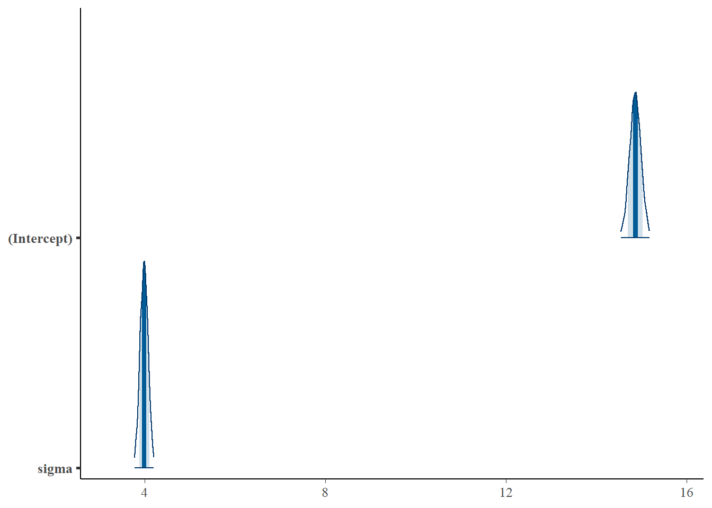

library(rstanarm)
library(ggplot2)
library(bayesplot)
library(blavaan)
library(dplyr)
library(magick)
library(ggplot2)
library(tidyverse)
library(ggridges)
library(dplyr)
library(tidyr)
library(rsvg)
theme_set(bayesplot::theme_default())
theme_set(theme_bw())1 Intro to the Bayes filter
1.1 load libraries needed
1.2 Create sample
Simulate the sample from a normal distribution with mu = 15, std = 2 set in data.frame for rstanarm to read the data.
set.seed(1234)
n <- 1000
x0 <- rnorm(n, 15, 4)
b0 = 1
y = b0 * x0
df = data.frame(y, x0)1.3 Fit the simple model
Here we have a normally distributed prior, centered around 1 with a variance of 3.
We are testing if the model can find the mean of 15 from the population of which X0 is sampled. In a more complicated model it is also possible to check for b1, b2 etc for explanatory variables x1, x2 etc. In this simulation we purely look at the influence of the changes in prior to the posterior.
fit <- stan_glm(y ~ 1,
data = df,
prior_intercept = normal(c(1), 3),
cores = parallel::detectCores(),
seed = 1234)
posterior1 <- as.array(fit)1.4 Evaluate the simple model
There are several ways to evaluate this model. A first insight can be generated by looking at the summary of the model. This gives the most basic information on the posterior distributions. Each variable of the model has its own posterior distribution, as it starts with a prior distribution. With the function mcmc_areas() the posterior distributions around the estimated variables are plotted in the same graph. Another way of showing these posterior distributions is by using mcmc_hist(). This function takes samples of the posterior. It is also possible to show the Credible intervals in the mcmc_areas() function.
summary(fit)
Model Info:
function: stan_glm
family: gaussian [identity]
formula: y ~ 1
algorithm: sampling
sample: 4000 (posterior sample size)
priors: see help('prior_summary')
observations: 1000
predictors: 1
Estimates:
mean sd 10% 50% 90%
(Intercept) 14.9 0.1 14.7 14.9 15.0
sigma 4.0 0.1 3.9 4.0 4.1
Fit Diagnostics:
mean sd 10% 50% 90%
mean_PPD 14.9 0.2 14.6 14.9 15.1
The mean_ppd is the sample average posterior predictive distribution of the outcome variable (for details see help('summary.stanreg')).
MCMC diagnostics
mcse Rhat n_eff
(Intercept) 0.0 1.0 2399
sigma 0.0 1.0 2877
mean_PPD 0.0 1.0 3028
log-posterior 0.0 1.0 1630
For each parameter, mcse is Monte Carlo standard error, n_eff is a crude measure of effective sample size, and Rhat is the potential scale reduction factor on split chains (at convergence Rhat=1).color_scheme_set("blue")
mcmc_areas(fit,
pars = c( "(Intercept)", "sigma"),
prob = 0.8, # 80% intervals
prob_outer = 0.999, # 99.9% of the total distribution
point_est = "mean")mcmc_hist(posterior1)1.5 Repeat all of this above with a small sample and see how this influences the model
In the above simulation it is shown that the variance and mean of the population is found in the posterior. In the above example we have a data set containing 500 values and a rather sharp prior around 1 with a variance of 3. Regardless of the sharp prior, the sample size was large enough to pull the posterior to the data. In the next example we will look what happens to the posterior if we take a much smaller data set but the same prior.
set.seed(1234)
n <- 8
x0_2 <- rnorm(n, 15, 2)
y2 = 1 * x0_2
df = data.frame(y2, x0_2)
fit2 <- stan_glm(y2 ~ 1,
data = df,
prior_intercept = normal(c(1), 3),
# prior = IG()
cores = parallel::detectCores(),
seed = 1234)
posterior2 <- as.array(fit2)
color_scheme_set("red")
mcmc_areas(fit2,
pars = c( "(Intercept)", "sigma"),
prob = 0.8, # 80% intervals
prob_outer = 0.99, # 99%
point_est = "mean")mcmc_hist(posterior2)Clearly the model can predict less good with a smaller sample size. This is visible in the mean and sigma. The distributions are skewed and the means are on the wrong position.
1.6 Returning to the sample size of 500, but introduce an error term in the model.
n <- 500
x0 <- rnorm(n, 15, 2)
b0 = 1
e <- rnorm(n, 0, 1)
y_e = 1 * x0 + e
df_e = data.frame(y, y_e, x0)
fit_e <- stan_glm(y_e ~ 1,
data = df_e,
prior = normal(c(1), 3),
cores = parallel::detectCores(),
seed = 1234)
posterior_error <- as.array(fit_e)
# summary(fit_e)
# summary(fit)
color_scheme_set("blue")
mcmc_areas(fit,
pars = c( "(Intercept)", "sigma"),
prob = 0.8, # 80% intervals
prob_outer = 0.99, # 99%
point_est = "mean")
mcmc_hist(posterior_error)This error is visible in the mean and SD of the intercept and Sigma. So we have seen here that the size of the data and the chosen model both influence the posterior distribution. Let’s assume, for simulation purposes, that a very simple model suffices. We leave out the error and go back to a sample size of n = 500.
1.7 Investigate the influence of the prior. Keeping the data and the model the same.
n <- 500
x0 <- rnorm(n,15, 2)
b0 = 1
y = b0 * x0
df = data.frame(y, x0)
fit_wide <- stan_glm(y ~ 1,
data = df,
prior_intercept = normal(1, 1E10),
cores = parallel::detectCores(),
seed = 1234)
fit_far <- stan_glm(y ~ 1,
data = df,
prior_intercept = normal(1E5, 1E2),
cores = parallel::detectCores(),
seed = 1234)
fit_far_wide <- stan_glm(y ~ 1,
data = df,
prior_intercept = normal(1E5, 1E10),
cores = parallel::detectCores(),
seed = 1234)
fit_far_sharp <- stan_glm(y ~ 1,
data = df,
prior_intercept = normal(1E5,1E-5),
cores = parallel::detectCores(),
seed = 1234)
posterior_wide <- as.array(fit_wide)
posterior_far <- as.array(fit_far)
posterior_far_sharp <- as.array(fit_far_sharp)
posterior_far_wide <- as.array(fit_far_wide)
# par(2,2)
color_scheme_set("green")
# mcmc_areas(posterior_wide,
# pars = c("(Intercept)", "sigma"),
# prob = 0.8, # 80% intervals
# prob_outer = 0.99, # 99%
# point_est = "mean")
#
mcmc_hist(posterior_wide)#
color_scheme_set("blue")
# mcmc_areas(posterior_far,
# pars = c("(Intercept)", "sigma"),
# prob = 0.8, # 80% intervals
# prob_outer = 0.99, # 99%
# point_est = "mean")
mcmc_hist(posterior_far)#
# mcmc_areas(posterior_far_sharp,
# pars = c("(Intercept)", "sigma"),
# prob = 0.8, # 80% intervals
# prob_outer = 0.99, # 99%
# point_est = "mean")
mcmc_hist(posterior_far_wide)#
# mcmc_areas(posterior_far_wide,
# pars = c("(Intercept)", "sigma"),
# prob = 0.8, # 80% intervals
# prob_outer = 0.99, # 99%
# point_est = "mean")
mcmc_hist(posterior_far_sharp)Great! here we see a clear pattern. When we use a very wide prior, the data is enough to help the model predict the parameters of the population correctly. This prior is non-informative.
When we use a prior that is relatively far, mean at 10.000, but with a large variance of 100. The prior is weakly informative compared to the data. With this prior it is still possible for the model to find the correct parameters. Even though the mean of the prior is very far off.
When we specify our prior relatively far but extremely wide, it approximates the prior we specified as a wide prior. Both priors are non-informative and with either prior the model can still find the correct parameters.
However, when we specify a prior relatively far and sharp, the model cannot predict the correct parameters anymore. The data set is too small for the relative influence of the prior. The prior draws the posterior to the mean of the prior.